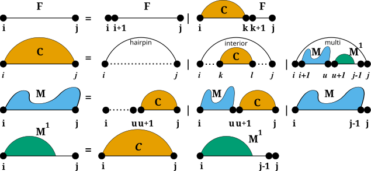

Secondary Structure Constraints
Secondary structure constraints provide an easy control of which structures the prediction algorithms actually include into their solution space and how these structures are evaluated.
Specialized Modules:
Introduction
Secondary Structure constraints can be subdivided into two groups:
While hard constraints directly influence the production rules used in the folding recursions by allowing, disallowing, or enforcing certain decomposition steps, soft constraints are used to change position specific contributions in the recursions by adding bonuses/penalties in form of pseudo free energies to certain loop configurations.
Secondary structure constraints are always applied at decomposition level, i.e. in each step of the recursive structure decomposition, for instance during MFE prediction. Below is a visualization of the decomposition scheme
For Hard Constraints the following option flags may be used to constrain the pairing behavior of single, or pairs of nucleotides:
VRNA_CONSTRAINT_CONTEXT_ENFORCE
VRNA_CONSTRAINT_CONTEXT_NO_REMOVE
However, for Soft Constraints we do not allow for simple loop type dependent constraining. But soft constraints are equipped with generic constraint support. This enables the user to pass arbitrary callback functions that return auxiliary energy contributions for evaluation the evaluation of any decomposition.
The callback will then always be notified about the type of decomposition that is happening, and the corresponding delimiting sequence positions. The following decomposition steps are distinguished, and should be captured by the user’s implementation of the callback:
General API symbols
Defines
-
VRNA_CONSTRAINT_FILE
- #include <ViennaRNA/constraints/basic.h>
Flag for vrna_constraints_add() to indicate that constraints are present in a text file.
- Deprecated:
Use 0 instead!
See also
-
VRNA_CONSTRAINT_SOFT_MFE
- #include <ViennaRNA/constraints/basic.h>
Indicate generation of constraints for MFE folding.
- Deprecated:
This flag has no meaning anymore, since constraints are now always stored! (since v2.2.6)
-
VRNA_CONSTRAINT_SOFT_PF
- #include <ViennaRNA/constraints/basic.h>
Indicate generation of constraints for partition function computation.
- Deprecated:
Use VRNA_OPTION_PF instead!
-
VRNA_DECOMP_PAIR_HP
- #include <ViennaRNA/constraints/basic.h>
Flag passed to generic softt constraints callback to indicate hairpin loop decomposition step.
This flag notifies the soft or hard constraint callback function that the current decomposition step evaluates a hairpin loop enclosed by the base pair \((i,j)\).
decomp_hp.svg
-
VRNA_DECOMP_PAIR_IL
- #include <ViennaRNA/constraints/basic.h>
Indicator for interior loop decomposition step.
This flag notifies the soft or hard constraint callback function that the current decomposition step evaluates an interior loop enclosed by the base pair \((i,j)\), and enclosing the base pair \((k,l)\).
decomp_il.svg
-
VRNA_DECOMP_PAIR_ML
- #include <ViennaRNA/constraints/basic.h>
Indicator for multibranch loop decomposition step.
This flag notifies the soft or hard constraint callback function that the current decomposition step evaluates a multibranch loop enclosed by the base pair \((i,j)\), and consisting of some enclosed multi loop content from k to l.
decomp_ml.svg
-
VRNA_DECOMP_ML_ML_ML
- #include <ViennaRNA/constraints/basic.h>
Indicator for decomposition of multibranch loop part.
This flag notifies the soft or hard constraint callback function that the current decomposition step evaluates a multibranch loop part in the interval \([i:j]\), which will be decomposed into two multibranch loop parts \([i:k]\), and \([l:j]\).
decomp_ml_ml_ml.svg
-
VRNA_DECOMP_ML_STEM
- #include <ViennaRNA/constraints/basic.h>
Indicator for decomposition of multibranch loop part.
This flag notifies the soft or hard constraint callback function that the current decomposition step evaluates a multibranch loop part in the interval \([i:j]\), which will be considered a single stem branching off with base pair \((k,l)\).
decomp_ml_stem.svg
-
VRNA_DECOMP_ML_ML
- #include <ViennaRNA/constraints/basic.h>
Indicator for decomposition of multibranch loop part.
This flag notifies the soft or hard constraint callback function that the current decomposition step evaluates a multibranch loop part in the interval \([i:j]\), which will be decomposed into a (usually) smaller multibranch loop part \([k:l]\).
decomp_ml_ml.svg
-
VRNA_DECOMP_ML_UP
- #include <ViennaRNA/constraints/basic.h>
Indicator for decomposition of multibranch loop part.
This flag notifies the soft or hard constraint callback function that the current decomposition step evaluates a multibranch loop part in the interval \([i:j]\), which will be considered a multibranch loop part that only consists of unpaired nucleotides.
decomp_ml_up.svg
-
VRNA_DECOMP_ML_ML_STEM
- #include <ViennaRNA/constraints/basic.h>
Indicator for decomposition of multibranch loop part.
This flag notifies the soft or hard constraint callback function that the current decomposition step evaluates a multibranch loop part in the interval \([i:j]\), which will decomposed into a multibranch loop part \([i:k]\), and a stem with enclosing base pair \((l,j)\).
decomp_ml_ml_stem.svg
-
VRNA_DECOMP_ML_COAXIAL
- #include <ViennaRNA/constraints/basic.h>
Indicator for decomposition of multibranch loop part.
This flag notifies the soft or hard constraint callback function that the current decomposition step evaluates a multibranch loop part in the interval \([i:j]\), where two stems with enclosing pairs \((i,k)\) and \((l,j)\) are coaxially stacking onto each other.
decomp_ml_coaxial.svg
-
VRNA_DECOMP_ML_COAXIAL_ENC
- #include <ViennaRNA/constraints/basic.h>
Indicator for decomposition of multibranch loop part.
This flag notifies the soft or hard constraint callback function that the current decomposition step evaluates a multibranch loop part in the interval \([i:j]\), where two stems with enclosing pairs \((i,k)\) and \((l,j)\) are coaxially stacking onto each other.
decomp_ml_coaxial.svg
-
VRNA_DECOMP_EXT_EXT
- #include <ViennaRNA/constraints/basic.h>
Indicator for decomposition of exterior loop part.
This flag notifies the soft or hard constraint callback function that the current decomposition step evaluates an exterior loop part in the interval \([i:j]\), which will be decomposed into a (usually) smaller exterior loop part \([k:l]\).
decomp_ext_ext.svg
-
VRNA_DECOMP_EXT_UP
- #include <ViennaRNA/constraints/basic.h>
Indicator for decomposition of exterior loop part.
This flag notifies the soft or hard constraint callback function that the current decomposition step evaluates an exterior loop part in the interval \([i:j]\), which will be considered as an exterior loop component consisting of only unpaired nucleotides.
decomp_ext_up.svg
-
VRNA_DECOMP_EXT_STEM
- #include <ViennaRNA/constraints/basic.h>
Indicator for decomposition of exterior loop part.
This flag notifies the soft or hard constraint callback function that the current decomposition step evaluates an exterior loop part in the interval \([i:j]\), which will be considered a stem with enclosing pair \((k,l)\).
decomp_ext_stem.svg
-
VRNA_DECOMP_EXT_EXT_EXT
- #include <ViennaRNA/constraints/basic.h>
Indicator for decomposition of exterior loop part.
This flag notifies the soft or hard constraint callback function that the current decomposition step evaluates an exterior loop part in the interval \([i:j]\), which will be decomposed into two exterior loop parts \([i:k]\) and \([l:j]\).
decomp_ext_ext_ext.svg
-
VRNA_DECOMP_EXT_STEM_EXT
- #include <ViennaRNA/constraints/basic.h>
Indicator for decomposition of exterior loop part.
This flag notifies the soft or hard constraint callback function that the current decomposition step evaluates an exterior loop part in the interval \([i:j]\), which will be decomposed into a stem branching off with base pair \((i,k)\), and an exterior loop part \([l:j]\).
decomp_ext_stem_ext.svg
-
VRNA_DECOMP_EXT_STEM_OUTSIDE
- #include <ViennaRNA/constraints/basic.h>
Indicator for decomposition of exterior loop part.
-
VRNA_DECOMP_EXT_EXT_STEM
- #include <ViennaRNA/constraints/basic.h>
Indicator for decomposition of exterior loop part.
This flag notifies the soft or hard constraint callback function that the current decomposition step evaluates an exterior loop part in the interval \([i:j]\), which will be decomposed into an exterior loop part \([i:k]\), and a stem branching off with base pair \((l,j)\).
decomp_ext_ext_stem.svg
-
VRNA_DECOMP_EXT_EXT_STEM1
- #include <ViennaRNA/constraints/basic.h>
Indicator for decomposition of exterior loop part.
This flag notifies the soft or hard constraint callback function that the current decomposition step evaluates an exterior loop part in the interval \([i:j]\), which will be decomposed into an exterior loop part \([i:k]\), and a stem branching off with base pair \((l,j-1)\).
decomp_ext_ext_stem1.svg
Functions
-
void vrna_message_constraint_options(unsigned int option)
- #include <ViennaRNA/constraints/hard.h>
Print a help message for pseudo dot-bracket structure constraint characters to stdout. (constraint support is specified by option parameter)
Currently available options are:VRNA_CONSTRAINT_DB_PIPE (paired with another base)VRNA_CONSTRAINT_DB_DOT (no constraint at all)VRNA_CONSTRAINT_DB_X (base must not pair)VRNA_CONSTRAINT_DB_ANG_BRACK (paired downstream/upstream)VRNA_CONSTRAINT_DB_RND_BRACK
(base i pairs base j)
pass a collection of options as one value like this:
vrna_message_constraints(option_1 | option_2 | option_n)
See also
vrna_message_constraint_options_all(), vrna_constraints_add(), VRNA_CONSTRAINT_DB, VRNA_CONSTRAINT_DB_PIPE, VRNA_CONSTRAINT_DB_DOT, VRNA_CONSTRAINT_DB_X, VRNA_CONSTRAINT_DB_ANG_BRACK, VRNA_CONSTRAINT_DB_RND_BRACK, VRNA_CONSTRAINT_DB_INTERMOL, VRNA_CONSTRAINT_DB_INTRAMOL
- Parameters
option – Option switch that tells which constraint help will be printed
-
void vrna_message_constraint_options_all(void)
- #include <ViennaRNA/constraints/hard.h>
Print structure constraint characters to stdout (full constraint support)
See also
vrna_message_constraint_options(), vrna_constraints_add(), VRNA_CONSTRAINT_DB, VRNA_CONSTRAINT_DB_PIPE, VRNA_CONSTRAINT_DB_DOT, VRNA_CONSTRAINT_DB_X, VRNA_CONSTRAINT_DB_ANG_BRACK, VRNA_CONSTRAINT_DB_RND_BRACK, VRNA_CONSTRAINT_DB_INTERMOL, VRNA_CONSTRAINT_DB_INTRAMOL
-
VRNA_CONSTRAINT_FILE
High Level Constraints Interfaces
High-level interfaces that build upon the soft constraints framework can be obtained by the implementations in the submodules:
An implementation that generates soft constraints for unpaired nucleotides by minimizing the discrepancy between their predicted and expected pairing probability is available in submodule Generate Soft Constraints from Data.